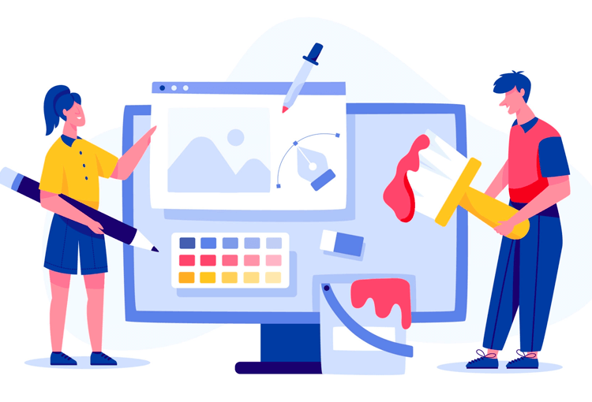
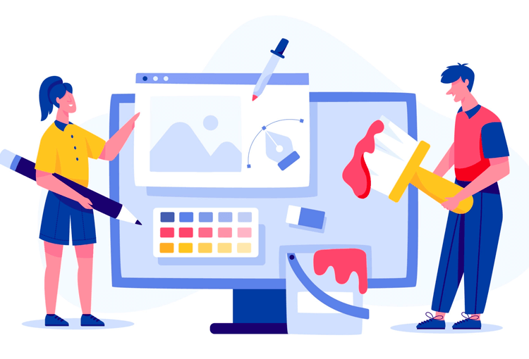

TIC'S

Las materias pertenesientes al Sexto Semestre son:
Sistemas de Informacion:
Utiliza la metodología para el desarrollo de software, favoreciendo el trabajo colaborativo y
creativo en la resolución de problemas de su contexto.
Emplea los diferentes modelos de bases de datos, mostrando disposición al trabajo metódico y
organizado, para resolver problemas de su contexto.
Programacion:
Plantea el uso de diagramas de flujo y algoritmos, fomentando su desarrollo creativo, para
solucionar problemas cotidianos de su contexto.
Explica los lenguajes de programación y sus metodologías de forma consciente, asertiva y
empática, en la resolución de problemas del ámbito académico y laboral.
Propone la creación de códigos con instrucciones secuenciales, condicionales y/o repetitivas,
asumiendo la frustración como parte del proceso de aprendizaje, en la solución de problemas
de su entorno.
Paginas Web:
Construye una página web, utilizando elementos del software de diseño web, favoreciendo su
creatividad e innovación, para comunicar información en distintos contextos.
Diseño Digital:
Ilustra ideas publicitarias y de comunicación a través de diseño de imágenes digitales, utilizando
diferentes herramientas de las aplicaciones de software de diseño, en un ambiente responsable
y creativo.
Crea animaciones multimedia, favoreciendo un ambiente de tolerancia y creatividad, para
expresar ideas que den solución a problemas de su entorno.
Aplica el software de diseño editorial para realizar estrategias creativas e innovadoras, en la
transmisión de ideas, favoreciendo su creatividad en un ambiente ético y responsable dentro de
su contexto.
 
